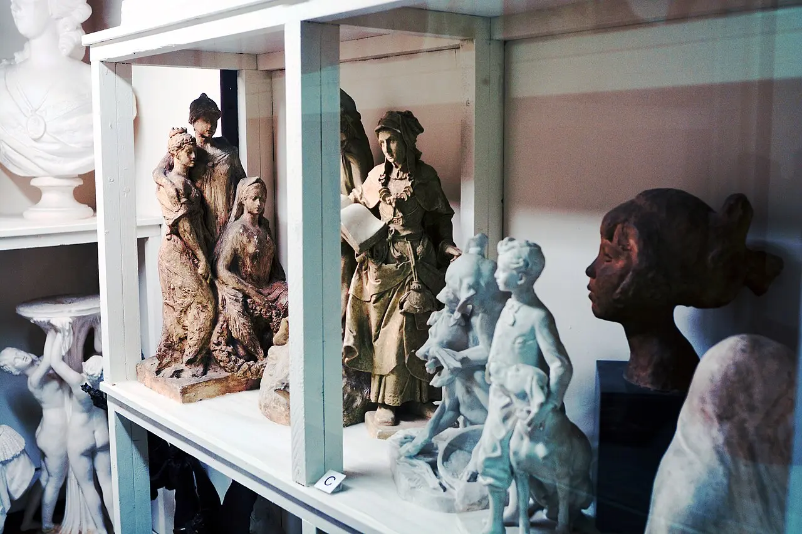

Separa il dato visibile dalla tua interpretazione.
01 · Prima decisione
È arte
oppure no?
Nessun autore, luogo o contesto. Prima osserva; poi dichiara quali indizi stanno orientando il tuo giudizio.
Una cosa diventa arte per ciò che è, per dove si trova o per chi la riconosce?

02 · Periodizzare
Quando comincia
il contemporaneo?
Non esiste una soglia neutra. Ogni data illumina una trasformazione e ne mette altre in ombra.
Scegli una soglia e osserva che cosa rende visibile e che cosa non spiega.
Metodo: secondo dopoguerra, anni Sessanta–Settanta, 1989, globalizzazione anni Novanta e presente digitale-ambientale non sono risposte intercambiabili: sono prospettive da motivare.
03 · Dal modulo 23
L’opera è una rete.
Il potere anche.
Idea, istruzione, esecuzione, documento e istituzione non coincidono. Ora chiediamo chi può attribuire, finanziare, diffondere, conservare o contestare.
Scegli un attore: nessuno decide da solo, ma alcuni dispongono di risorse molto maggiori.
Institutional Critique ≠ rifiuto del museo
Da Hans Haacke e Marcel Broodthaers ad Andrea Fraser, la critica istituzionale rende visibili finanziamenti, linguaggi, ruoli e interessi che l’istituzione tende a presentare come neutrali.
04 · Museo e canone
Esporre significa
anche escludere.
Acquisizione, deposito, restauro, didascalia e disposizione costruiscono una storia visibile. Il canone non è una lista eterna: è il risultato di decisioni documentabili e contestabili.
Seleziona quattro casi. Il laboratorio renderà visibili anche le esclusioni.
05 · Curatore, mostra, biennale
Cambiare cornice
cambia il significato.
Titolo, accostamento e testo curatoriale non sono decorazioni: costruiscono relazioni. Biennale e documenta internazionalizzano il campo, ma portano con sé storie, selezioni e asimmetrie.
06 · Mercato
Il prezzo decide
il valore?
Il prezzo è un fatto economico; l’importanza storica è un giudizio argomentato; la visibilità è una distribuzione di attenzione. Possono influenzarsi, ma non sono sinonimi.
MODELLO DIDATTICO · NON FINANZIARIO
—Nessuna stima monetaria: il modello mostra relazioni.Scegli una combinazione per smontare un’equivalenza automatica.
mercato primario ≠ astagalleria ≠ museoprezzo ≠ canoneacquisto ≠ consenso
07 · Accesso e rappresentazione
Chi può
rappresentare chi?
La domanda riguarda accesso alle istituzioni, potere di parlare, condizioni dello sguardo e conseguenze. Non basta aggiungere nomi a un catalogo già costruito altrove.
Esplora un caso e separa presenza numerica, controllo del racconto e condizioni materiali.
08 · Autore e proprietà
Riusare non significa
avere mano libera.
Citazione, appropriazione, parodia, plagio e collaborazione si distinguono per uso concreto, trasformazione, attribuzione, diritti e rapporti di potere. La legge non esaurisce l’etica.
Scegli un caso problematico: non tutte le giurisdizioni rispondono nello stesso modo.
Limite necessario: questa PWA non fornisce pareri legali. Mostra perché “è trasformativo” o “era già online” non sono autorizzazioni automatiche.
09 · Pubblico
Partecipa
o viene usato?
La partecipazione non è un bene automatico. Bisogna seguire regole, possibilità di rifiuto, lavoro, riconoscimento, documentazione e ciò che resta alla comunità.
Scegli uno scenario e individua chi controlla il processo.
presenza ≠ consensopartecipante ≠ coautorevisibilità ≠ beneficioevento ≠ eredità
10 · Mondo dell’arte
Globale non significa
senza disuguaglianze.
Biennali, migrazioni e reti digitali moltiplicano i nodi; fondi, passaporti, lingue, collezionismo e infrastrutture continuano a distribuire opportunità in modo asimmetrico.
Scegli un nodo: ogni luogo è associato a una condizione storica e istituzionale, non a uno stile regionale.
11 · Ecologia
L’ambiente è tema
o materia politica?
Rappresentare la crisi non basta a rendere sostenibile una pratica. Materiali, trasporti, energia, conservazione, sponsor, territorio e comunità appartengono alla stessa analisi.
Non è un calcolatore di emissioni. Seleziona decisioni verificabili e osserva i conflitti.
Scegli una contraddizione. Non esiste una classifica morale universale.
12 · Piattaforme, digitale, IA
La macchina non crea
da sola.
Net Art, opere variabili, NFT e sistemi generativi rendono più visibili dipendenze da software, reti, contratti, archivi, dati, lavoro e selezione umana.
Scegli uno strato: possesso, accesso, esecuzione e conservazione non coincidono.
Attiva i nodi che hanno inciso sull’esito. “IA” non è un autore magico: è un’etichetta che rischia di nascondere la catena.
13 · Seconda decisione
Chi ha
deciso?
Ritorna all’immagine. La rivelazione non aggiunge soltanto un nome: sposta la domanda dall’oggetto visibile alla politica della visibilità.
Non una mostra, non un’unica opera
Un deposito visibile.
Joe Mabel fotografò il 23 ottobre 2022 sculture conservate al Maryhill Museum of Art, nello Stato di Washington. La fotografia è CC BY-SA 4.0; le sculture sono indicate come pubblico dominio.
- Fotografo
- Joe Mabel
- Luogo
- Maryhill Museum of Art
- Funzione
- Conservare e rendere accessibile ciò che non occupa la sala principale
- Conflitto
- Visibilità, gerarchia, cura e spazio limitato
La fotografia non prova che gli oggetti siano “meno arte”. Mostra che il museo distribuisce visibilità: esposizione e deposito sono entrambe decisioni istituzionali.
Fonte e licenza dell’immagine ↗La tua prima decisione
Non hai ancora registrato una prima decisione.
Tavolo delle decisioni
Distribuisci 100 punti di potere/responsabilità. Il totale non può superare 100.
0 / 100 punti distribuiti.
Atlante personale del riconoscimento
Attiva soltanto i criteri che hai imparato a distinguere.
Nessun criterio ancora scelto.
Sintesi dalle tue azioni
Nessuna biografia inventata
Il testo usa esclusivamente decisioni, laboratori e note realmente svolti.
Esplora il modulo per costruire la sintesi.
Verifica finale · 16 nuclei
Comprendere
le distinzioni.
0 / 16 compresi
16 / 16
Tutti i nuclei sono stati compresi, direttamente o attraverso il recupero.
Lo statuto artistico nasce da una rete instabile di decisioni e conflitti. La rete non distribuisce a tutti lo stesso potere.